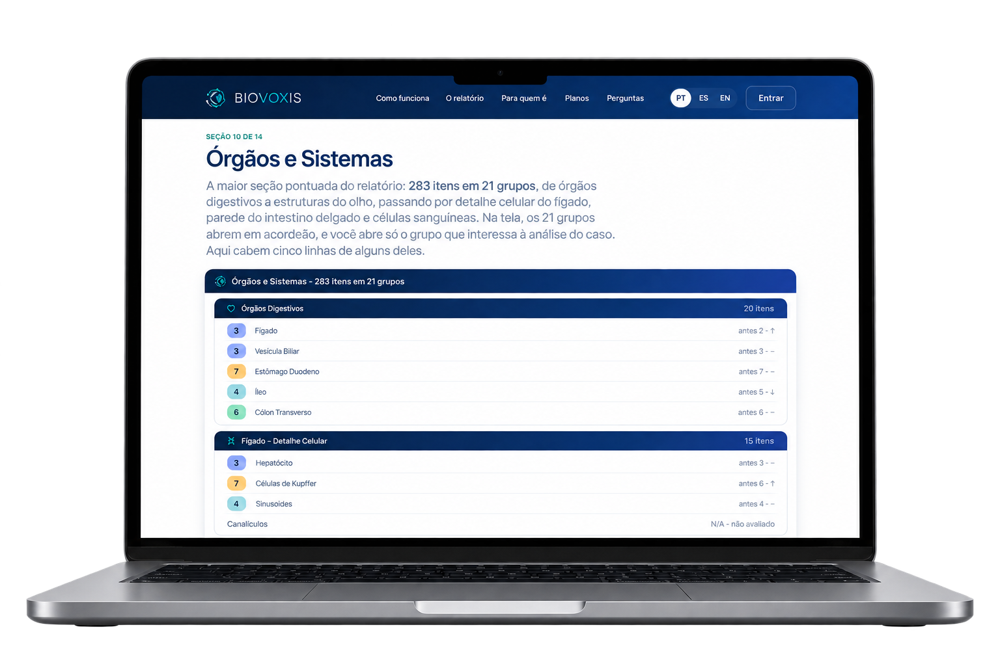

Órgãos e Sistemas
283 itens em 21 grupos, de órgãos digestivos a estruturas do olho.
Avaliação funcional por voz · uso profissional
Uma ferramenta profissional de apoio à análise integrativa por meio da voz: organiza informações, amplia a compreensão funcional e acompanha a pessoa em assistência ao longo do tempo.
São 60 a 120 segundos de voz, cerca de 1.045 indicadores organizados em 14 seções e um registro que pode ser comparado na próxima consulta.
Você continua sendo quem interpreta e quem decide. Veja como funciona →
O desafio do profissional
A consulta integrativa vive da percepção do profissional — e percepção se guarda mal: dispersa entre uma consulta e outra, resiste a virar comparação com o que você observou sessenta dias atrás. O Biovoxis dá à sua escuta um registro que se repete no mesmo formato, coleta após coleta.
Porque acompanhar é mais do que avaliar uma única vez.
Leitura integrativa em 11 seções, escrita para outro profissional de saúde, terminando em Síntese e Hipótese Central e em 6 a 8 recomendações numeradas.
A nova camada de informação
A pessoa avaliada lê um texto em voz alta por volta de dois minutos. Dessa leitura sai uma avaliação funcional com cerca de 1.045 indicadores organizados em catorze seções — informação nova sobre a mesma pessoa, que entra na sua análise integrativa ao lado de:
Você não precisa mudar a sua forma de atender. Você acrescenta uma camada a ela.
Como funciona
Seis passos, e os dois últimos são seus. O sistema cuida dos quatro primeiros; os dois últimos são trabalho profissional — é ali que a avaliação funcional vira análise.
De 60 a 120 segundos de leitura em voz alta, no seu atendimento ou por um link que a pessoa avaliada abre em casa. A sua agenda deixa de depender da distância.
A coleta sobe para o servidor e a análise roda enquanto você segue com o atendimento. Em poucos minutos o documento está montado.
Cerca de 1.045 indicadores entram nas catorze seções, cada um com uma nota na mesma régua de 1 a 9 — a mesma lógica do começo ao fim do documento.
Uma leitura integrativa em 11 seções, escrita por inteligência artificial para outro profissional de saúde, que fecha em Síntese e Hipótese Central e em 6 a 8 recomendações numeradas.
Você lê esse material junto com a queixa, o histórico e o que observou no atendimento. A interpretação é sua, e é ela que dá sentido ao documento.
Na coleta seguinte, as duas leituras ficam lado a lado, item a item. Você acompanha o que mudou e decide o próximo passo do caso.
A tecnologia organiza. Você interpreta.
Ver o passo a passoO grande diferencial
Uma leitura isolada informa. Um registro que se repete no mesmo formato permite acompanhar. É a diferença entre saber como a pessoa em assistência estava naquele dia e ver como ela está em relação à última vez.
Diferenças abaixo da margem da medida aparecem marcadas, para você saber o que acompanhar. Ilustração com dados fictícios.
Não acompanhe apenas o momento. Acompanhe a trajetória.
Veja como funciona a comparaçãoO relatório
Não queremos que você compre uma promessa. Queremos que você conheça o produto. Catorze seções, cerca de 1.045 indicadores avaliados. Um documento por coleta, material de apoio à sua análise.

283 itens em 21 grupos, de órgãos digestivos a estruturas do olho.
241 itens em 20 grupos, de controle glicêmico a inflamação e oxidação.
210 alimentos em 11 categorias, agrupados por família. Seção informativa, com a advertência completa publicada na página do relatório.
Bactérias, fungos, vírus, parasitas, metais e mofos. Hipótese de trabalho, nunca confirmação da presença de uma substância ou agente.
Aminoácidos, minerais, vitaminas, ômegas, lipídios e hemograma.
14 meridianos da medicina tradicional chinesa e 7 chakras.
24 cromossomos e 363 condições. Seção informativa, fora da contagem de indicadores.
As 12 notas, a nota dominante e a nota suprimida da coleta.
Leitura integrativa por inteligência artificial em 11 seções, com 6 a 8 recomendações numeradas.
O que mudou, o que se repetiu e o que ficou dentro da margem da medida.
Os dados do relatório demonstrativo são fictícios e usados exclusivamente para apresentar o funcionamento do sistema.
A régua
Cada indicador recebe uma nota. O 5 é o equilíbrio; abaixo dele a leitura tende à hipofunção, acima dele ao excesso. A faixa de 4 a 6 é a fisiológica.
5 = equilíbrio
Como os sistemas aparentavam estar funcionando no momento em que a voz foi registrada — lentos, equilibrados ou acelerados. É uma leitura de uso: diz se o corpo aparenta estar usando bem o que tem.
A mesma régua vale para as catorze seções — você reconhece o formato em cada coleta seguinte.
Para quem é
Feito para terapeutas integrativos: atendimento longo, escuta do terreno, conduta que se ajusta ao longo de semanas. Quem trabalha assim reconhece o vocabulário do relatório na primeira leitura.
As 14 seções seguem a lógica de quem já raciocina por terreno biológico — órgãos, meridianos, chakras, nutrição, carga tóxica. O documento fala a sua língua desde a primeira página.
A leitura integrativa declara suas bases: fisiologia integrada de Guyton & Hall, abordagem ortomolecular, o intestino como centro imune e hormonal, alimentação de baixo carboidrato.
Três idiomas, inclusive no texto da inteligência artificial, e um registro comparável entre sessões.
Você gera um link e envia. A pessoa avaliada grava pelo celular ou computador. O link vale 7 dias e aceita até 3 envios.
Compare diferentes momentos e veja o que mudou e o que permaneceu.
O Biovoxis na prática
A pessoa em assistência faz a coleta, no seu atendimento ou pelo link, antes de chegar.
Você tem uma estrutura organizada, com as catorze seções na mesma régua.
Você lê os indicadores junto com a queixa, o histórico e o que já sabe do caso.
Na consulta seguinte, a coleta nova e a anterior ficam lado a lado.
O que você acompanha passa a ser o que mudou — e o que permaneceu.
O que torna o Biovoxis diferente
Uma leitura funcional ampla logo no começo. Você abre a conversa a partir de um material organizado, em vez de uma folha em branco.
Cada retorno ganha um registro datado, e o intervalo entre consultas passa a ter o que mostrar.
Presencial ou por link. A versão do termo de consentimento aceito fica gravada junto com a coleta.
Duas coletas lado a lado, item a item. O que se repete aparece em destaque; o que ficou dentro da margem vem marcado como tal.
O histórico fica no registro da pessoa em assistência, com exportação em dois arquivos CSV e impressão em PDF.
133 perguntas em 19 seções, com somatório por coluna e oligoelementos sugeridos. Contratada à parte, a partir de R$ 19,90 por mês.
Tecnologia e inteligência artificial
Cada coleta sai com uma leitura integrativa em 11 seções fixas, escrita para outro profissional de saúde, que termina em Síntese e Hipótese Central e em 6 a 8 recomendações numeradas, cada uma justificada pelo achado que a motivou. O tempo que você gastava redigindo volta para a consulta.
A tecnologia organiza. A inteligência artificial estrutura. Você interpreta.
As 11 seções da leitura integrativa
A IA não conhece o caso como você conhece. Ela não substitui:
A gravação não vai para o provedor do modelo e não fica armazenada: é processada e descartada na mesma sessão.
Transparência
O produto pronto está publicado aqui, de acesso livre, antes de qualquer pagamento. Confira você mesmo:
E então decida.
Posicionamento profissional
Você continua sendo quem interpreta. Você continua sendo quem decide.
O que ele faz é organizar uma nova camada de informação para o seu raciocínio — e um registro que pode ser comparado na próxima consulta. O produto entrega uma avaliação funcional; a análise integrativa é sua, com o seu repertório, a sua escuta e o contexto que só você tem do caso.
O Biovoxis não diagnostica.
Não prescreve.
Não substitui avaliação clínica ou exame laboratorial.
Segurança e dados
Pagamento e cancelamento acontecem em páginas do processador de pagamentos. Zero campo de cartão na tela, zero coluna no banco, zero registro em log.
Cada profissional vê apenas o próprio cadastro, porque a regra está no banco de dados e vale antes da tela.
Toda a pontuação roda do lado do servidor, e o catálogo do produto permanece fora do navegador.
Autenticação em dois fatores por aplicativo autenticador, disponível para qualquer conta.
Quem controla os dados da pessoa em assistência é você; a Biovoxis atua como operadora. A divisão está detalhada na Política de Privacidade, com a lista completa de suboperadores.
Planos e preços
Todos os recursos e as catorze seções do relatório em qualquer período de assinatura. Você escolhe como pagar.
Como você prefere pagar
Biovoxis · plano completo plano único
R$ 198,95 por mês
valor mensal equivalente · 12 meses de acesso
Cobrança única de R$ 2.387,40, uma vez por ano.
economia de 60% no valor mensal
Assinatura contratada no aplicativo, com o pagamento a cargo do processador de pagamentos: cartão de crédito e Pix. A assinatura se renova automaticamente ao fim de cada período, pelo valor vigente, até que você cancele — e o cancelamento é no próprio painel, a qualquer tempo.
Antes de assinar
Você lê o que está comprando antes de comprar.
Você paga a assinatura, e só.
Um plano só, com tudo dentro, em qualquer período.
Na mesma tela em que você acompanha a assinatura, a qualquer momento.
Direito garantido pelo Código de Defesa do Consumidor.
Cartão de crédito e Pix pelo processador de pagamentos · 7 dias de tolerância em caso de falha de cobrança.
Perguntas frequentes
É uma ferramenta de terapia integrativa e bem-estar, de caráter educativo, para uso de profissionais da área integrativa. Não constitui exame, diagnóstico nem prescrição, e não substitui a avaliação de um profissional de saúde habilitado.
Cerca de dez minutos dentro da própria consulta. Para coletas remotas, você gera um link válido por 7 dias, com até 3 envios, e a coleta cai direto no histórico da pessoa em assistência.
Vai ser próximo, com variação — e o Biovoxis informa o tamanho dessa variação. Cada relatório traz a mudança mínima detectável daquela coleta: o limiar a partir do qual uma diferença vale ser lida como mudança real.
Em vez de período de avaliação, o relatório de exemplo está publicado inteiro, com as catorze seções. Há 7 dias de direito de arrependimento.
Pode, a qualquer momento e sem fidelidade, pelo próprio painel. O acesso continua até o fim do período já pago.
Leia o relatório de exemplo inteiro, compare com o material que você usa hoje e decida com o documento na mão.
Transforme a voz em informação. Acompanhe a evolução.
Dúvida antes de assinar? Fale com a gente →